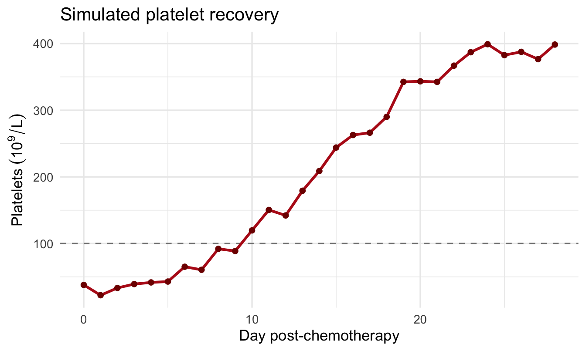

library(ggplot2)
set.seed(42)
days <- 0:28
platelets <- 20 + 380 / (1 + exp(-0.30 * (days - 14))) # logistic recovery
obs <- platelets + rnorm(length(days), 0, 9)
df <- data.frame(day = days, platelets = obs)
ggplot(df, aes(day, platelets)) +
geom_hline(yintercept = 100, linetype = "dashed", colour = "grey50") +
geom_line(colour = "#B71C1C", linewidth = 1.1) +
geom_point(colour = "#7f0000", size = 1.8) +
labs(title = "Simulated platelet recovery",
x = "Day post-chemotherapy",
y = expression(Platelets~(10^9/L))) +
theme_minimal(base_size = 13)